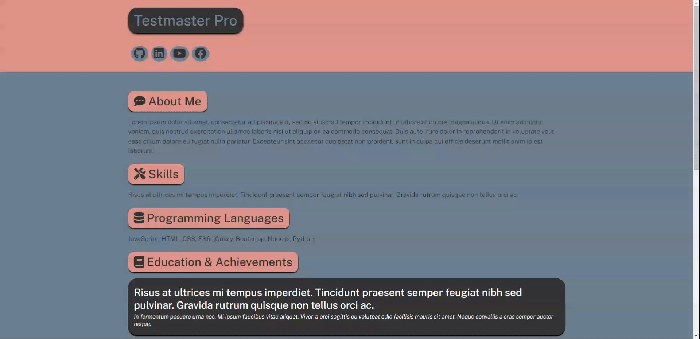
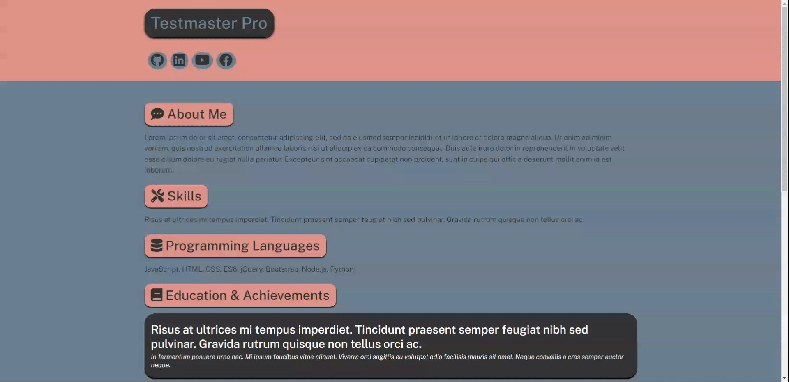
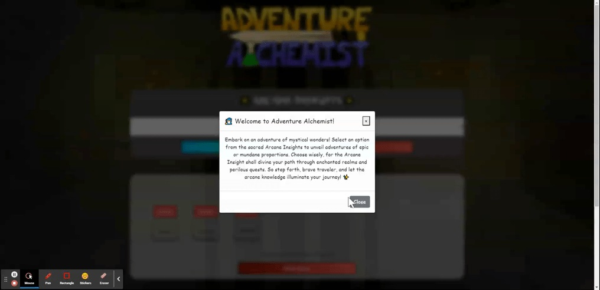
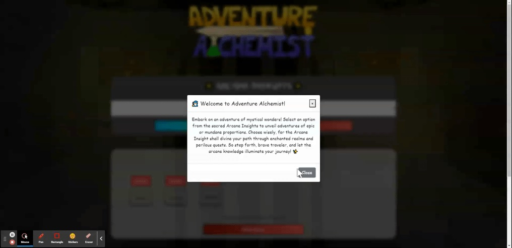
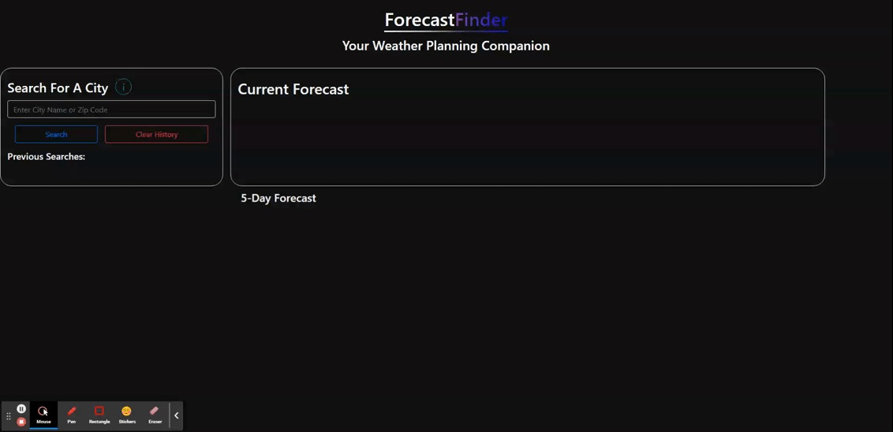
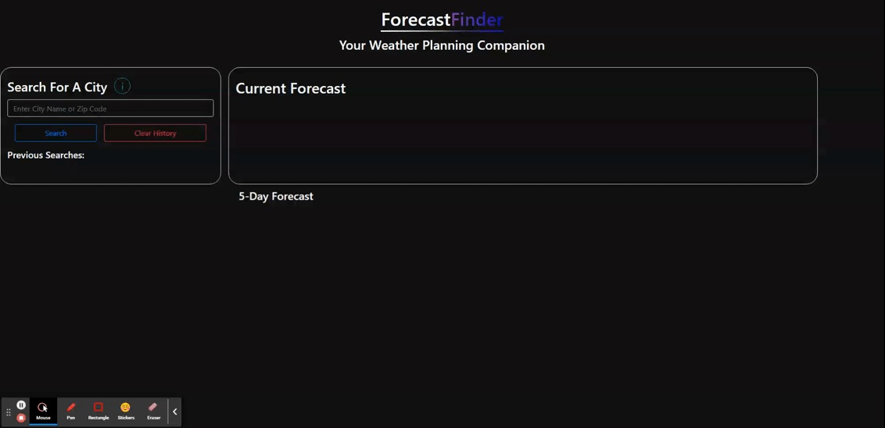
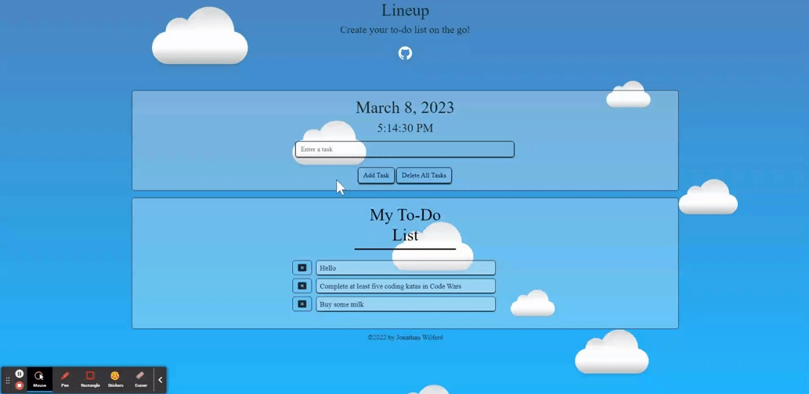
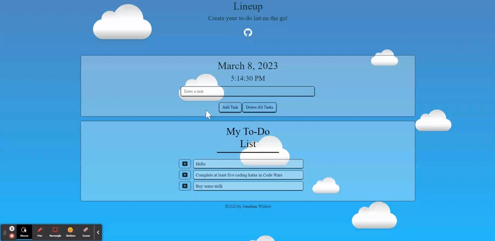

Projects
Hover on a card!
Tap the card to play the image!
🌐 PortfolioForge.
Built With: JavaScript, HTML, CSS, ES6, Node, Inquirer (v.^9.2.8), FontAwesome (v.5.11.2)
 

In our rapidly changing world, the internet has deeply woven itself into our culture and society, making a professional online presence essential. PortfolioForge, a versatile and user-friendly portfolio generator, empowers developers and professionals to effortlessly showcase their skills and accomplishments, creating a lasting digital impact. Guided by Inquirer, users answer questions to tailor their portfolio for a ready-to-use web profile or a developer-friendly baseline.
Here's an interesting tidbit: The very portfolio you're currently exploring was crafted using this project! Utilizing the template as a foundation, I've also extensively customized my portfolio to make it unique and hopefully inspire others to try the same.
View Project on GitHub🔮 Adventure-Alchemist
Built With: JavaScript, HTML, CSS, ES6, Bootstrap
 

Simplify and enhance the process of creating dungeon scenarios for your tabletop RPG. Utilizes algorithms to create imaginative and engaging scenarios while considering factors such as dungeon theme, interior/exterior setting, area size, monster types, and so much more! Adventure Alchemist is built to help empower you to effortlessly create, save, and recall unique scenarios based on your liking.
Adventure Alchemist originated as a commission and has been made public for the community to benefit from. The repository encourages exploration and collaboration, with the codebase thoughtfully organized using JavaScript Modules to ensure it's easily modifiable and modularized. This app was built with a mobile first approach but can also be used on desktop devices. Best of luck on your future adventures! 🧙
View Project on GitHub🌌 ForecastFinder
Built With: OpenWeather API, JavaScript, HTML, CSS, ES6, Bootstrap
 

Explore worldwide weather conditions with ForecastFinder, powered by OpenWeather. Get current and five-day forecasts for any location, save searches, and receive color-coded responses. Built to be used on Desktop and Mobile.
View Project on GitHub📝 Lineup
Built With: JavaScript, HTML, CSS, jQuery, Bootstrap
 

Head in the cloud, need a To-Do list to help keep you organized? Checkout Lineup, a productivity app where users can create and edit tasks and delete an entry when necessary. Built alongside this app is a fun front-end design. Designed to be used on Desktop and Mobile platforms!
role="button"View Project on GitHub